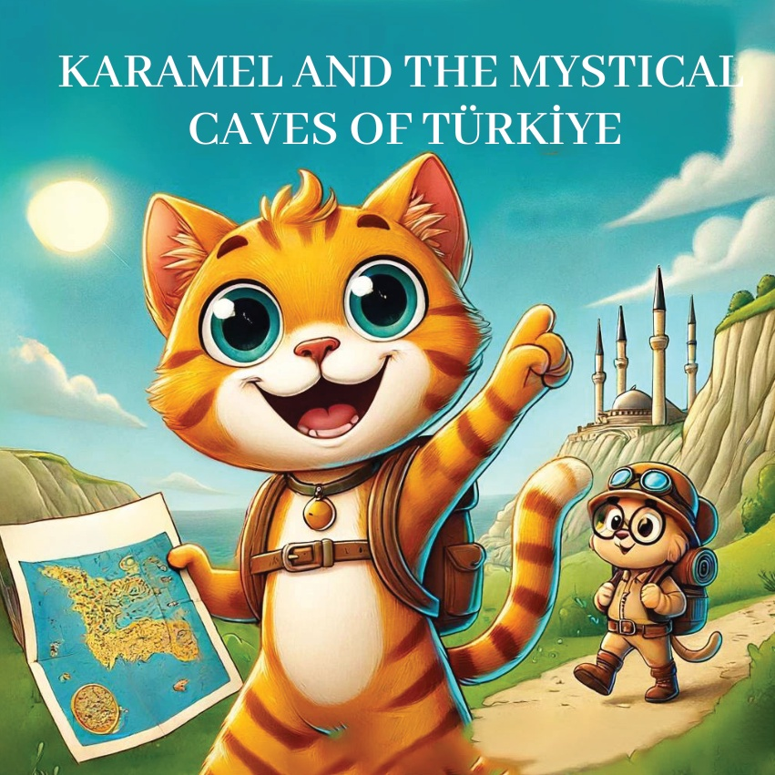
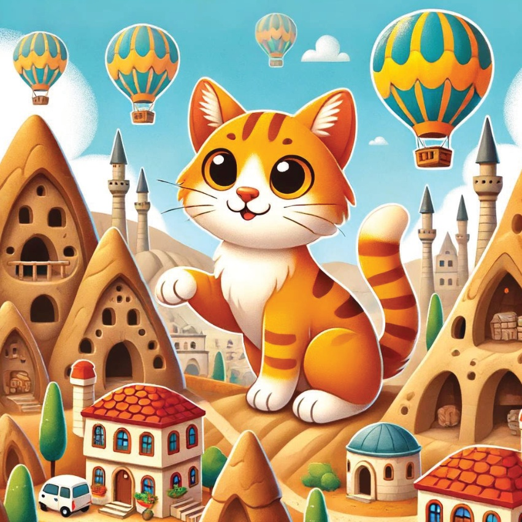
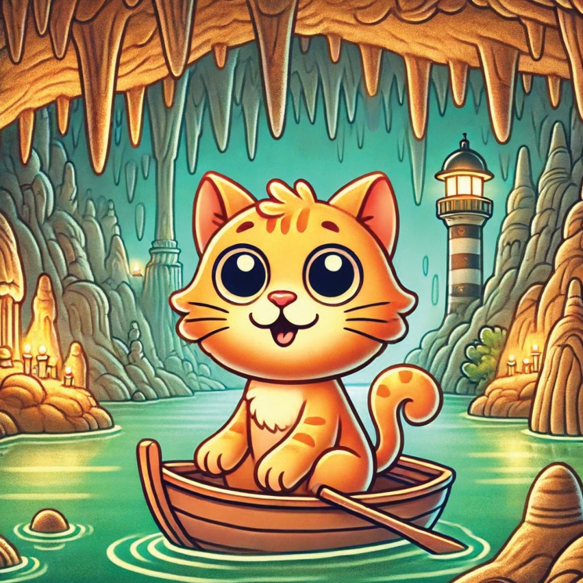
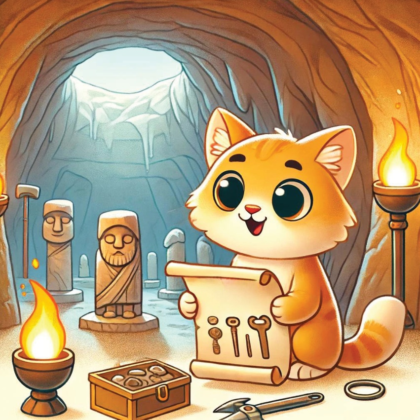
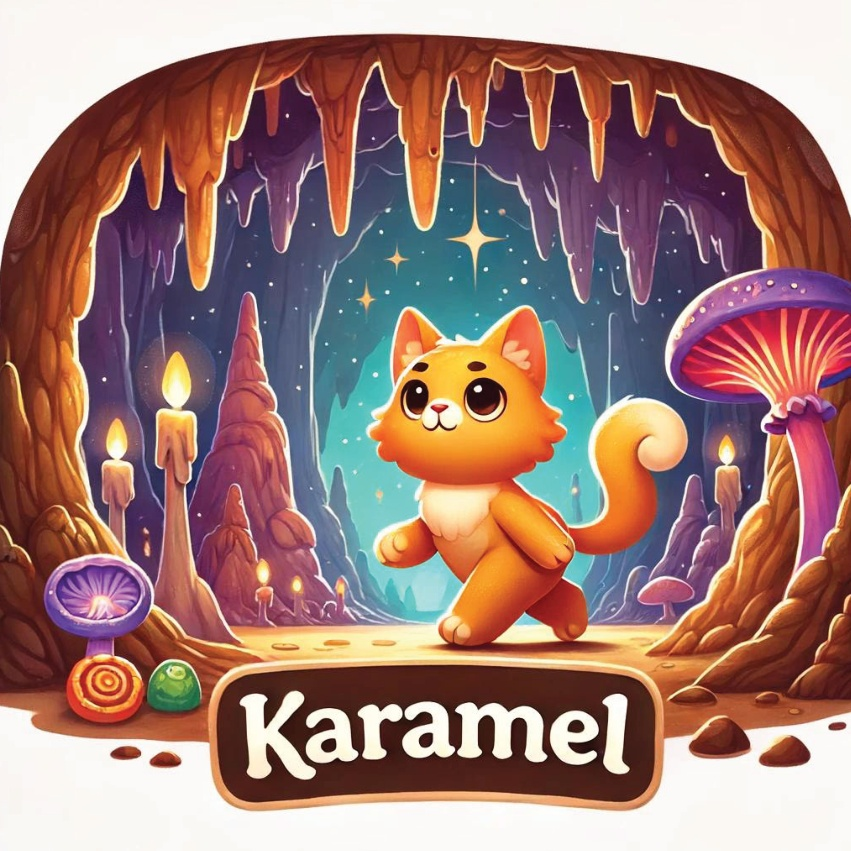
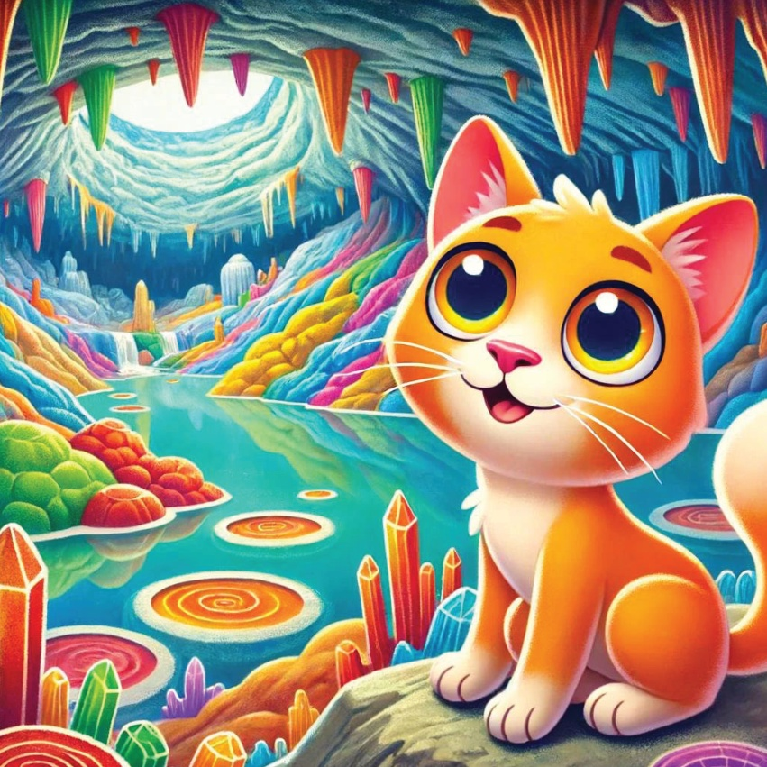
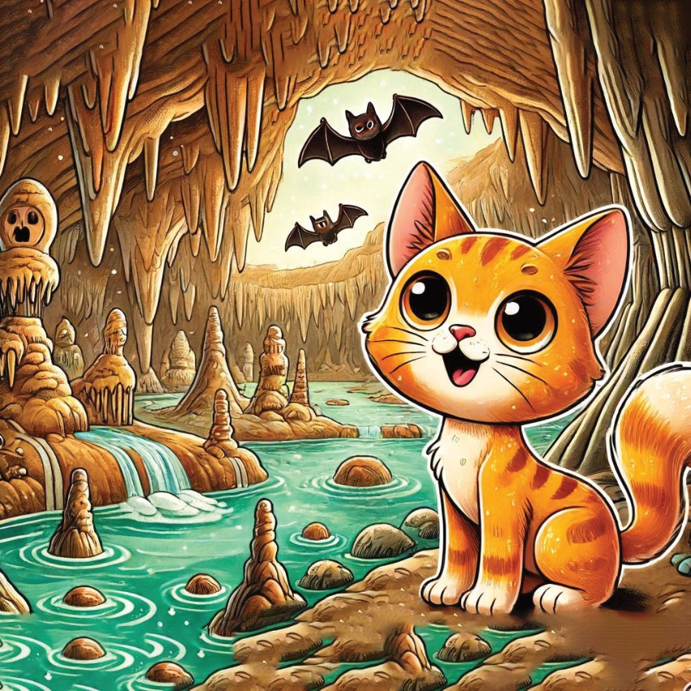
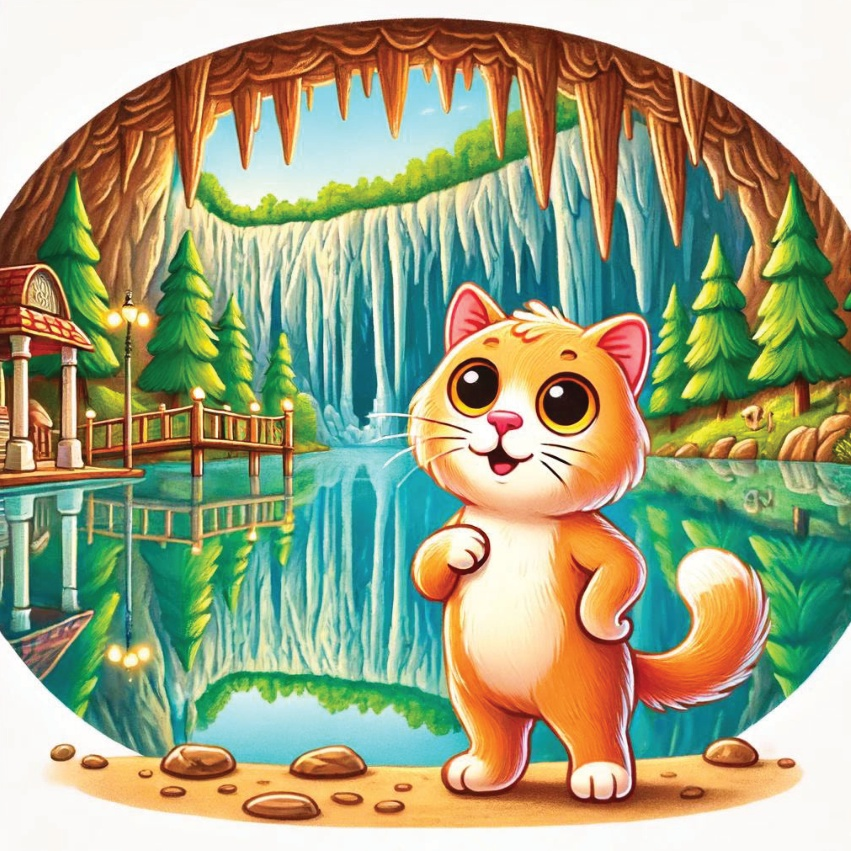
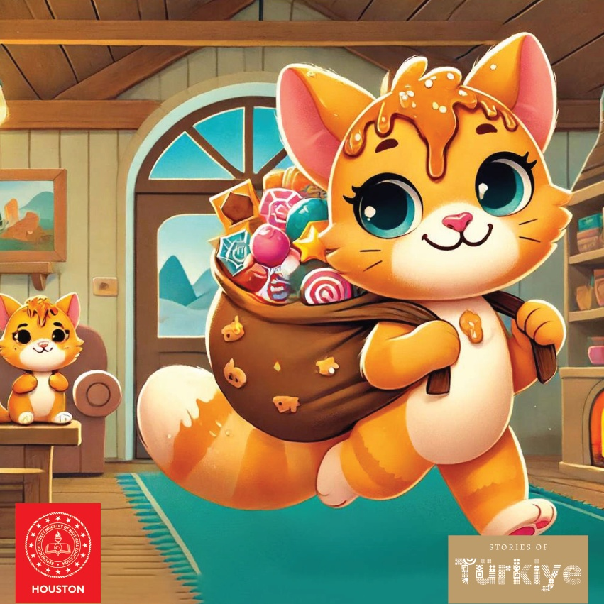

1

2

3
Карамел, смелата котка,
чуваше истории за мистичните
пещери на Турция.
Жаден да открие техните тайни,
тя се отправи на пътешествие, за да изследва
тези древни чудеса.
4
5
Пещерите на Кападокия
Първата спирка на Карамел беше в Кападокия,
където тя разгледа фееричните комини
и древните пещерни жилища.
Тя се възхити на уникалните скални образувания
и историята, издълбана в камъка.
6

7
Пещерата Алтънбешик
След това Карамел посети
пещерата Алтънбешик в Анталия.
Тя беше изумена от подземното езеро
и зашеметяващите варовикови образувания.
Красотата на пещерата я остави без думи.
8

9
Пещерата Карайин
Карамел пътува до пещерата Карайин,
една от най-старите обитавани пещери в Турция.
Тя откри древни инструменти
и артефакти, оставени от ранните хора,
и научи за историческото значение на пещерата.
10

11
Пещерата Дим
В Аланя, Карамел разгледа пещерата Дим.
Тя беше заинтригувана от сталактитите и сталагмитите, които украсяваха пещерата.
Охлаждащата и мистериозна атмосфера
я караше да се чувства сякаш
е в друг свят.
12

13
Пещерата Инсую
Следващата спирка на Карамел беше пещерата Инсую в Бурдюр. Тя се възхити на цветните минерални отлагания и на малките подземни езера. Красотата на пещерата наистина беше завладяваща.
14

15
Пещерата Дупница
В Къркярели, Карамел посети пещерата Дупница.
Тя научи за двете части на пещерата: мократа и сухата част.
Разглеждайки и двете, тя откри уникални скални образувания и колонии от прилепи.
16

17
Пещерата Седемте Езера
Последната спирка на Карамел беше пещерата Седемте Езера в Кастамону. Тя беше очарована от седемте малки езера вътре в пещерата, всяко със своя уникален чар. Безбрежността на пещерата я превърна в перфектен край на пътуването ѝ.
18

19
Сърцето ѝ изпълнено с изумление
и умът ѝ пълен с истории,
Карамел осъзна, че истинските съкровища на Türkiye се крият под повърхността ѝ.
Тя се върна у дома,
мечтайки за следващото си приключение.
20
21

22